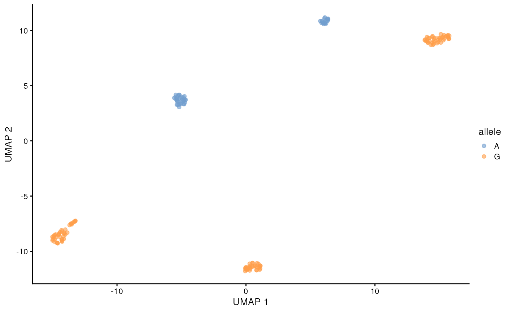
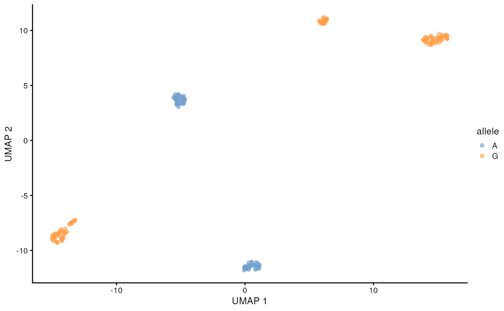

Igniting full-length isoform and mutation analysis of single-cell RNA-seq data with FLAMES
Changqing Wang
The Walter and Eliza Hall Institute of Medical Research, 1G Royal Parade, Parkville, VIC 3052, Melbourne, Australia; Department of Medical Biology, The University of Melbourne, Parkville, VIC 3010, Melbourne, Australia16 July 2024
FLAMESWorkflow.RmdAbstract
In this vignette, we will walk through the FLAMES
single-cell pipeline, from de-multiplexing raw FASTQ files to
identifying and quantifying transcripts. We then perform analysis
including single nucleotide polymorphism (SNP), differential transcript
expression analysis and differential transcript usage analysis. We will
use the cell line mixture data from Tian et al. (2021) [@tianComprehensiveCharacterizationSinglecell2021].
Introduction
While the popular single-cell kits allows profiling the transcriptome of up to 10,000 cells [@WhatMaximumNumber] at once, the traditional short-read sequencing (100-200 nts) limits our ability to unambiguously profile isoform expression and mutations. To overcome this issue, we can combine long-read sequencing with existing single-cell kits.
Though long-read sequencing can provide read lengths several orders
of magnitude larger than the typical short-read sequencing, it comes at
much steeper cost and lower throughput, to accommodate this, we profile
a smaller sub-sample of cells in our FLT-seq protocol[@tianComprehensiveCharacterizationSinglecell2021]:

There are also many other protocols that combine single-cell with long-read sequencing, including scRaCH-seq which profiles gene panel [@pengSinglecellRapidCapture2024], LR-Split-seq which uses combinatorial barcoding and does not require microfluidic equipments [@rebboahMappingModelingGenomic2021].
Set-up
if (!file.exists("~/filtered_sorted.bam") | !file.exists("~/filtered_sorted.bam.bai")) {
options(timeout = max(600, getOption("timeout")))
download.file("https://zenodo.org/records/12751214/files/filtered_sorted.bam?download=1", "filtered_sorted.bam", mode = 'wb')
download.file("https://zenodo.org/records/12751214/files/filtered_sorted.bam.bai?download=1", "filtered_sorted.bam.bai", mode = 'wb')
bam <- "filtered_sorted.bam"
} else {
bam <- "~/filtered_sorted.bam"
}
if (!file.exists("~/subset_GRCh38.fa")) {
download.file("https://zenodo.org/records/12751214/files/subset_GRCh38.fa.gz?download=1", "subset_GRCh38.fa.gz", mode = 'wb')
R.utils::gunzip("subset_GRCh38.fa.gz", destname = "subset_GRCh38.fa", remove = FALSE)
fa <- "subset_GRCh38.fa"
} else {
fa <- "~/subset_GRCh38.fa"
}
FLAMES pipeline
Read pre-processing
The FLAMES pipeline starts with de-multiplexing the
FASTQ reads, i.e. identifiying the cell barcode. For protocols that use
the 10x single-cell kits, the raw reads will look like the following,
where the 10x adapter sequences and polyT tails are highlighted. 

FLAMES will locate the cell barcode by locating the
adjacent adapter sequences , and match the barcode against an allow-list
(if it is provided). We can specify the above 10x 3’ protocol as
follows:
protocol_pattern <- c(
primer = "CTACACGACGCTCTTCCGATCT",
BC = "NNNNNNNNNNNNNNNN",
UMI = "NNNNNNNNNNNN",
polyT = "TTTTTTTTT"
)Note that the order has to be the same as they appear in the
protocol. The names can be arbitrary for each sequence, but the names
UMI and BC are required .
Let’s try de-multiplexing a couple reads with
FLAMES::find_barcode:
outdir <- tempfile()
dir.create(outdir)
# prepare a barcode allow-list
bc_allow <- file.path(outdir, "bc_allow.tsv")
R.utils::gunzip(
filename = system.file("extdata/bc_allow.tsv.gz", package = "FLAMES"),
destname = bc_allow, remove = FALSE
)
find_barcode(
# raw fastq file to be de-multiplexed
fastq = system.file("extdata/fastq", package = "FLAMES"),
# outputs
stats_out = file.path(outdir, "bc_stat"),
reads_out = file.path(outdir, "demultiplexed.fq"),
barcodes_file = bc_allow,
pattern = protocol_pattern, # our protocol pattern
threads = 1
)## FLEXIPLEX 0.96.2
## Setting max barcode edit distance to 2
## Setting max flanking sequence edit distance to 8
## Setting read IDs to be replaced
## Setting number of threads to 1
## Search pattern:
## primer: CTACACGACGCTCTTCCGATCT
## BC: NNNNNNNNNNNNNNNN
## UMI: NNNNNNNNNNNN
## polyT: TTTTTTTTT
## Setting known barcodes from /tmp/Rtmpznvia7/file4e540fb9202/bc_allow.tsv
## Number of known barcodes: 143
## Searching for barcodes...
## Number of reads processed: 393
## Number of reads where a barcode was found: 368
## Number of reads where more than one barcode was found: 4
## All done!
## Skipping TSO trimming...FLAMES will find and trim the specified pattern, save
the barcode and UMI to the identifier field of the read, let check the
first raw read:
read_lines(system.file("extdata/fastq/musc_rps24.fastq.gz", package = "FLAMES"),
n_max = 2)## [1] "@50409b8e-c5c8-4b86-8d2b-95effbb4434c"
## [2] "GTTGCCGTTCAGTTGCTAAGCAGTGGTATCAACGCGATCCGCTGGGGCCTTGCGCGTTGATATGATTGGTCGGCAGTGAGCGGTCCTCTTTTCCTCCTCTCCCGGCTCGGCGCCGTAGCCATCATGAATGACAGTAACCATCCGGACCAGGAAGTTCATGACCAACCCAAATCTGCTCAGAGGAAACAGATGGTCATTGATATCCTTCATCCTGGGAAGGCAACAGTACCAAAAGGTGAAATTCAGGAAAAGCTGGCCAAAATGTACAAAACCACACCAGATGTCATCTTTGTATTTGGATTCAGAACCCACTTCAATTGGTAGCAAGACCACTAGCTTTGGCATGATCTATGATTCTTTAGATTATGCAAGAAGATGAGCCTAAACACAGACTGGCAAGACATGGCCTTTATGAGAGAAAGACCTCCGAAAACAGCAGAAAAGAGACACAAGAACAGAATGAAGAAGGTCAGGGGCACGGCGAGAGTAATGTTGGTGCTATGCAAAAAGTGAGTGGAGATTGGATACAGCCAAGGAGTAGATCTGCAGTGACTTGATGTTTGCTGTGATGTGCAGATTTCTGAGAGGACAAATAAACTAAAAGCTCCTACTAAAAAAAAAAAAAAAAAAAAAAGACAGCCCGGTACTACTACTGACCCGAGATCAGGAAGAGCGTCGTGTAGAGCAATACGTAAC"and the first de-multiplexed read:
read_lines(file.path(outdir, "demultiplexed.fq"), n_max = 2)## [1] "@CGGGTCAGTAGTAGTA_CCGGGCTGTCTT#50409b8e-c5c8-4b86-8d2b-95effbb4434c_-1of1"
## [2] "AGTAGGAGCTTTTAGTTTATTTGTCCTCTCAGAAATCTGCACATCACAGCAAACATCAAGTCACTGCAGATCTACTCCTTGGCTGTATCCAATCTCCACTCACTTTTTGCATAGCACCAACATTACTCTCGCCGTGCCCCTGACCTTCTTCATTCTGTTCTTGTGTCTCTTTTCTGCTGTTTTCGGAGGTCTTTCTCTCATAAAGGCCATGTCTTGCCAGTCTGTGTTTAGGCTCATCTTCTTGCATAATCTAAAGAATCATAGATCATGCCAAAGCTAGTGGTCTTGCTACCAATTGAAGTGGGTTCTGAATCCAAATACAAAGATGACATCTGGTGTGGTTTTGTACATTTTGGCCAGCTTTTCCTGAATTTCACCTTTTGGTACTGTTGCCTTCCCAGGATGAAGGATATCAATGACCATCTGTTTCCTCTGAGCAGATTTGGGTTGGTCATGAACTTCCTGGTCCGGATGGTTACTGTCATTCATGATGGCTACGGCGCCGAGCCGGGAGAGGAGGAAAAGAGGACCGCTCACTGCCGACCAATCATATCAACGCGCAAGGCCCCAGCGGATCGCGTTGATACCACTGCTTAGCAACTGAACGGCAAC"Alignment
Once the reads are processed, they are ready to be aligned to the
reference genome. FLAMES calls minimap2 to
perform alignment and samtoools to sort and index the BAM
file, so we need to make sure the binaries are available in
$PATH for FLAMES to find it.
if (!any(is.na(sys_which(c("minimap2", "k8"))))) {
minimap2_align(
config = jsonlite::fromJSON(
system.file('extdata/SIRV_config_default.json', package = 'FLAMES')
),
fa_file = fa,
fq_in = file.path(outdir, "demultiplexed.fq"),
annot = system.file("extdata", "filtered.gtf", package = "IgniteRNAseq"),
outdir = outdir
)
}FLAMES then performs gene quantification, isoform
identification and isoform quantification. For the interest of time we
will skip running them individually, as FLAMES also
provides the sc_long_pipeline wrapper to do all steps.
sce <- FLAMES::sc_long_pipeline(
genome_fa = fa,
fastq = system.file("extdata/fastq/musc_rps24.fastq.gz", package = "FLAMES"),
annotation = system.file("extdata/rps24.gtf.gz", package = "FLAMES"),
outdir = outdir,
barcodes_file = bc_allow,
minimap2 = '~/k8-1.2/k8-x86_64-Linux', # apt does not package k8 with minimap2
)Data pre-processing
After running the pipeline, we get a
SingleCellExperiment object and we can finally start some
analysis.
sce <- qs::qread(system.file("extdata", "sce.qs", package = "IgniteRNAseq"))
sce## class: SingleCellExperiment
## dim: 15076 162
## metadata(1): OutputFiles
## assays(1): counts
## rownames(15076): ENSG00000000419.14_50934870_50958532_1
## ENSG00000001036.14_143495487_143511720_2 ... ENST00000713574.1
## ENST00000713579.1
## rowData names(3): transcript_id gene_id FSM_match
## colnames(162): AAAGAACAGCGATCGA AACAGGGTCCAGTGCG ... TTTCAGTCACCAGTAT
## TTTGGAGCACAAAGTA
## colData names(0):
## reducedDimNames(0):
## mainExpName: NULL
## altExpNames(1): gene
altExp(sce, 'gene')## class: SingleCellExperiment
## dim: 14555 162
## metadata(0):
## assays(1): counts
## rownames(14555): ENSG00000179820.16 ENSG00000114062.22 ... ENSG00000212907.2
## ENSG00000228253.1
## rowData names(0):
## colnames(162): AAAGAACAGCGATCGA AACAGGGTCCAGTGCG ... TTTCAGTCACCAGTAT
## TTTGGAGCACAAAGTA
## colData names(0):
## reducedDimNames(0):
## mainExpName: NULL
## altExpNames(0):We can use Bioconductor packages for normalization, dimensionality reduction and clustering:
altExp(sce, 'gene') <- altExp(sce, 'gene') |>
scuttle::logNormCounts() |>
scater::runPCA() |>
scater::runUMAP()
sce$cluster <- scran::buildSNNGraph(altExp(sce, 'gene')) |>
igraph::cluster_leiden() |>
igraph::membership() |>
factor()
altExp(sce, 'gene')$cluster <- sce$cluster
scater::plotReducedDim(altExp(sce, 'gene'), 'UMAP', colour_by = 'sizeFactor')
scater::plotReducedDim(altExp(sce, 'gene'), 'UMAP', colour_by = 'cluster')
Mutation analysis
Mutation discovery
Next, we get the bulk allele count to see if there is any potential SNP mutation in our data.
mutation_discovery_tb <- FLAMES::find_variants(
bam,
fa,
system.file("extdata", "filtered.gtf", package = "IgniteRNAseq"),
min_nucleotide_depth = 100,
homopolymer_window = 3,
annotated_region_only = TRUE,
names_from = "gene_name",
threads = 4
)## 10:12:44 Reading reference ...## 10:12:45 Reading annotation ...## 10:12:45 Got 1 bam file, parallelizing over each region ...## 10:13:37 Merging results ...## 10:13:37 Calculating homopolymer percentages ...
mutation_discovery_tb## # A tibble: 1,088 × 10
## seqnames pos nucleotide count sum freq ref bam_path region homopolymer_pct
## <fct> <dbl> <fct> <int> <dbl> <dbl> <fct> <chr> <chr> <dbl>
## 1 chrM 7021 + 1553 249499 0.00622 T filtered_… MT-CO1 0.333
## 2 chrM 7020 - 1888 249484 0.00757 G filtered_… MT-CO1 0.5
## 3 chrM 7020 A 1632 249484 0.00654 G filtered_… MT-CO1 0.5
## 4 chrM 7020 C 117 249484 0.000469 G filtered_… MT-CO1 0.5
## 5 chrM 7020 T 457 249484 0.00183 G filtered_… MT-CO1 0.5
## 6 chrM 7022 + 565 249539 0.00226 T filtered_… MT-CO1 0.333
## 7 chrM 7021 - 2293 249499 0.00919 T filtered_… MT-CO1 0.333
## 8 chrM 7021 A 432 249499 0.00173 T filtered_… MT-CO1 0.333
## 9 chrM 7021 C 2509 249499 0.0101 T filtered_… MT-CO1 0.333
## 10 chrM 7021 G 1160 249499 0.00465 T filtered_… MT-CO1 0.333
## # ℹ 1,078 more rows
mutation_discovery_tb <- mutation_discovery_tb |>
filter(freq > 0.2, freq < 0.8) |>
arrange(desc(count))
mutation_discovery_tb## # A tibble: 6 × 10
## seqnames pos nucleotide count sum freq ref bam_path region homopolymer_pct
## <fct> <dbl> <fct> <int> <dbl> <dbl> <fct> <chr> <chr> <dbl>
## 1 chrM 7028 T 130634 249993 0.523 C filtere… MT-CO1 0.5
## 2 chrM 8251 A 104893 266526 0.394 G filtere… MT-CO2 0.5
## 3 chr19 48965830 C 85423 178620 0.478 charac… filtere… FTL -Inf
## 4 chr19 48965830 T 84346 178620 0.472 charac… filtere… FTL -Inf
## 5 chrM 9123 A 66376 220334 0.301 G filtere… MT-AT… 0.333
## 6 chrM 11719 A 51284 151846 0.338 G filtere… MT-ND4 0.333As we can see, there is a couple of potential SNP mutations, let’s see if they are correlated with our clustering.
Mutation calling
FLAMES offers the sc_mutations function to
call mutations at the single-cell level:
snps_tb <- FLAMES::sc_mutations(
bam,
seqnames = as.character(mutation_discovery_tb$seqnames),
positions = mutation_discovery_tb$pos,
indel = F,
barcodes = colnames(sce),
threads = 4
)## 10:14:10 Got 1 bam file, parallelizing over each position ...## 10:15:08 Merging results ...Lets visualize the SNPs on our previous UMAP:
head(snps_tb)## # A tibble: 6 × 7
## allele barcode allele_count cell_total_reads pct pos seqname
## <chr> <chr> <dbl> <dbl> <dbl> <dbl> <chr>
## 1 A AAAGAACAGCGATCGA 0 1030 0 7028 chrM
## 2 A AACAGGGTCCAGTGCG 2 1649 0.00121 7028 chrM
## 3 A AAGTCGTCAGTAGGAC 9 2299 0.00391 7028 chrM
## 4 A AATCACGGTCCTCCTA 7 1728 0.00405 7028 chrM
## 5 A AATCGACAGGGTGGGA 5 1611 0.00310 7028 chrM
## 6 A AATCGACTCGTTTACT 2 1196 0.00167 7028 chrM
chr19 <- snps_tb |>
filter(allele_count > 0, pct > 0.5) |>
filter(seqname == 'chr19', pos == 48965830)
chr19 <- chr19[match(colnames(sce), chr19$barcode),"allele"] |>
as.data.frame()
scater::plotReducedDim(altExp(sce, 'gene'), 'UMAP', colour_by = chr19)
chrM_7028 <- snps_tb |>
filter(allele_count > 0, pct > 0.5) |>
filter(seqname == 'chrM', pos == 7028)
chrM_7028 <- chrM_7028[match(colnames(sce), chrM_7028$barcode),"allele"] |>
as.data.frame()
scater::plotReducedDim(altExp(sce, 'gene'), 'UMAP', colour_by = chrM_7028)
chrM_8251 <- snps_tb |>
filter(allele_count > 0, pct > 0.5) |>
filter(seqname == 'chrM', pos == 8251)
chrM_8251 <- chrM_8251[match(colnames(sce), chrM_8251$barcode),"allele"] |>
as.data.frame()
scater::plotReducedDim(altExp(sce, 'gene'), 'UMAP', colour_by = chrM_8251)
chrM_9123 <- snps_tb |>
filter(allele_count > 0, pct > 0.5) |>
filter(seqname == 'chrM', pos == 9123)
chrM_9123 <- chrM_9123[match(colnames(sce), chrM_9123$barcode),"allele"] |>
as.data.frame()
scater::plotReducedDim(altExp(sce, 'gene'), 'UMAP', colour_by = chrM_9123)
chrM_11719 <- snps_tb |>
filter(allele_count > 0, pct > 0.5) |>
filter(seqname == 'chrM', pos == 11719)
chrM_11719 <- chrM_11719[match(colnames(sce), chrM_11719$barcode),"allele"] |>
as.data.frame()
scater::plotReducedDim(altExp(sce, 'gene'), 'UMAP', colour_by = chrM_11719)
Differential Transcript Experssion analysis
Since we have the transcript count matrix from FLAMES,
we can do some DTE analysis:
pseudo_bulk <- counts(sce) |>
t() |>
as.matrix() |>
by(sce$cluster, colSums) |>
sapply(identity) |>
by(rownames(counts(sce)), colSums) |>
sapply(identity) |>
t()
dgelist <- DGEList(
counts = pseudo_bulk[, -2],
group = factor(c("A", "B", "A", "B"))
)
dgelist <- dgelist[
filterByExpr(dgelist), , # bias?
keep.lib.sizes = FALSE
]
plotMDS(dgelist)
dgelist <- calcNormFactors(dgelist, method = "TMM")
# means model
design <- model.matrix(~ 0 + dgelist$samples$group, data = dgelist$samples)
colnames(design) <- gsub(".*\\$", "", colnames(design)) |>
gsub(" .*$", "", x = _)
dge_v <- voom(dgelist, design, save.plot = T, plot = F, span = 0.2)
efit <- lmFit(dge_v, dge_v$design) |>
contrasts.fit(contrasts = makeContrasts(
MalevsFemale = "groupA - groupB",
levels = dge_v$design
)) |>
eBayes()
topTable(efit)## logFC AveExpr t P.Value adj.P.Val B
## ENST00000621160.5 -7.20 7.01 -11.71 1.29e-06 0.0103 5.15
## ENST00000284440.9 5.95 6.64 11.00 2.15e-06 0.0103 4.92
## ENST00000618200.4 -7.91 6.81 -11.03 2.10e-06 0.0103 4.46
## ENST00000649529.1 -5.55 7.65 -9.11 9.85e-06 0.0289 3.80
## ENST00000316403.15 5.12 5.99 8.87 1.21e-05 0.0289 3.58
## ENST00000412585.7 -4.57 6.00 -8.60 1.55e-05 0.0306 3.37
## ENST00000361157.11 -4.61 6.96 -8.41 1.85e-05 0.0306 3.27
## ENST00000361566.7 -5.38 8.03 -8.29 2.06e-05 0.0306 3.19
## ENST00000378292.9 6.48 5.22 9.03 1.05e-05 0.0289 3.18
## ENST00000368716.9 4.90 6.44 8.25 2.14e-05 0.0306 3.14
scater::plotReducedDim(altExp(sce[, sce$cluster != 2], 'gene'), 'UMAP',
colour_by = data.frame(raw_expr = counts(sce)['ENST00000621160.5', sce$cluster != 2]))Differential Transcript Usage analysis
WIP
sce@metadata$OutputFiles$outdir <- tempdir()
download.file('https://zenodo.org/records/12751214/files/isoform_FSM_annotation.csv?download=1',
file.path(sce@metadata$OutputFiles$outdir, "isoform_FSM_annotation.csv"))
colLabels(sce) <- sce$cluster
dtu_df <- sc_DTU_analysis(sce)## Loading isoform_FSM_annotation.csv ...
## Selecting transcript_ids with full splice match ...
## Summing transcripts with same FSM ...
## Creating FSM_count.csv.gz ...
## /tmp/Rtmpznvia7/FSM_count.csv.gz saved.
## 12340 FSM_match(s) found.
## Filtering for genes with at least 2 detected isforms ... 8895 FSM_match(s) left.
## Keeping only the top 4 expressed FSM_matches for each gene ... 7783 FSM_match(s) left.
## Aggregating counts by cluster labels ...
## Filtering isoforms ... 7783 transcript_id(s) remaining.
## Performing Chi-square tests ...
## | | | 0% | | | 1% | |= | 1% | |= | 2% | |== | 2% | |== | 3% | |=== | 3% | |=== | 4% | |==== | 4% | |==== | 5% | |==== | 6% | |===== | 6% | |===== | 7% | |====== | 7% | |====== | 8% | |======= | 8% | |======= | 9% | |======== | 9% | |======== | 10% | |======== | 11% | |========= | 11% | |========= | 12% | |========== | 12% | |========== | 13% | |=========== | 13% | |=========== | 14% | |============ | 14% | |============ | 15% | |============ | 16% | |============= | 16% | |============= | 17% | |============== | 17% | |============== | 18% | |=============== | 18% | |=============== | 19% | |================ | 19% | |================ | 20% | |================ | 21% | |================= | 21% | |================= | 22% | |================== | 22% | |================== | 23% | |=================== | 23% | |=================== | 24% | |==================== | 24% | |==================== | 25% | |==================== | 26% | |===================== | 26% | |===================== | 27% | |====================== | 27% | |====================== | 28% | |======================= | 28% | |======================= | 29% | |======================== | 29% | |======================== | 30% | |======================== | 31% | |========================= | 31% | |========================= | 32% | |========================== | 32% | |========================== | 33% | |=========================== | 33% | |=========================== | 34% | |============================ | 34% | |============================ | 35% | |============================ | 36% | |============================= | 36% | |============================= | 37% | |============================== | 37% | |============================== | 38% | |=============================== | 38% | |=============================== | 39% | |================================ | 39% | |================================ | 40% | |================================ | 41% | |================================= | 41% | |================================= | 42% | |================================== | 42% | |================================== | 43% | |=================================== | 43% | |=================================== | 44% | |==================================== | 44% | |==================================== | 45% | |==================================== | 46% | |===================================== | 46% | |===================================== | 47% | |====================================== | 47% | |====================================== | 48% | |======================================= | 48% | |======================================= | 49% | |======================================== | 49% | |======================================== | 50% | |======================================== | 51% | |========================================= | 51% | |========================================= | 52% | |========================================== | 52% | |========================================== | 53% | |=========================================== | 53% | |=========================================== | 54% | |============================================ | 54% | |============================================ | 55% | |============================================ | 56% | |============================================= | 56% | |============================================= | 57% | |============================================== | 57% | |============================================== | 58% | |=============================================== | 58% | |=============================================== | 59% | |================================================ | 59% | |================================================ | 60% | |================================================ | 61% | |================================================= | 61% | |================================================= | 62% | |================================================== | 62% | |================================================== | 63% | |=================================================== | 63% | |=================================================== | 64% | |==================================================== | 64% | |==================================================== | 65% | |==================================================== | 66% | |===================================================== | 66% | |===================================================== | 67% | |====================================================== | 67% | |====================================================== | 68% | |======================================================= | 68% | |======================================================= | 69% | |======================================================== | 69% | |======================================================== | 70% | |======================================================== | 71% | |========================================================= | 71% | |========================================================= | 72% | |========================================================== | 72% | |========================================================== | 73% | |=========================================================== | 73% | |=========================================================== | 74% | |============================================================ | 74% | |============================================================ | 75% | |============================================================ | 76% | |============================================================= | 76% | |============================================================= | 77% | |============================================================== | 77% | |============================================================== | 78% | |=============================================================== | 78% | |=============================================================== | 79% | |================================================================ | 79% | |================================================================ | 80% | |================================================================ | 81% | |================================================================= | 81% | |================================================================= | 82% | |================================================================== | 82% | |================================================================== | 83% | |=================================================================== | 83% | |=================================================================== | 84% | |==================================================================== | 84% | |==================================================================== | 85% | |==================================================================== | 86% | |===================================================================== | 86% | |===================================================================== | 87% | |====================================================================== | 87% | |====================================================================== | 88% | |======================================================================= | 88% | |======================================================================= | 89% | |======================================================================== | 89% | |======================================================================== | 90% | |======================================================================== | 91% | |========================================================================= | 91% | |========================================================================= | 92% | |========================================================================== | 92% | |========================================================================== | 93% | |=========================================================================== | 93% | |=========================================================================== | 94% | |============================================================================ | 94% | |============================================================================ | 95% | |============================================================================ | 96% | |============================================================================= | 96% | |============================================================================= | 97% | |============================================================================== | 97% | |============================================================================== | 98% | |=============================================================================== | 98% | |=============================================================================== | 99% | |================================================================================| 99% | |================================================================================| 100%## Warning in sc_DTU_analysis(sce): Chi-squared approximation(s) may be incorrect## Results saved to /tmp/Rtmpznvia7/sc_DTU_analysis.csv